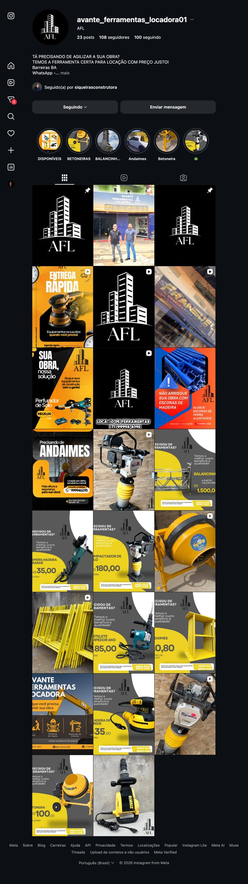

Análise completa do perfil atual da AFL e o plano de reestruturação para transformar o Instagram em uma vitrine que gera orçamentos pelo WhatsApp todos os dias.
Usuário: @avante_ferramentas_locadora01
Nome exibido: AFL
Bio: “TÁ PRECISANDO DE AGILIZAR A SUA OBRA? TEMOS A FERRAMENTA CERTA PARA LOCAÇÃO COM PREÇO JUSTO!” + Barreiras BA + WhatsApp
Destaques: DISPONÍVEIS, BETONEIRAS, BALANCINH..., Andaimes, Betoneira (repetido) e um sem título claro
Fixados no topo: 3 posts — dois deles são apenas a logo, um é a foto da fachada com os sócios
O nome “AFL” sozinho não é encontrado por quem busca “locação” ou “aluguel de equipamentos”. A bio não tem link clicável e o número fica escondido atrás do “mais”.
O campo “nome” passa a conter as palavras que o cliente digita na busca. A bio diz o que a AFL aluga, como cobra, onde atende e o que fazer — com link direto para o WhatsApp. Se o cliente preferir manter o @ atual, a mudança do nome exibido já resolve 80% da busca.
Um conjunto único, sem repetição, com capas no mesmo padrão visual (fundo escuro + ícone + nome em caixa alta). Ordem pensada no caminho do cliente: ver o que tem → ver preço → entender como alugar → confiar → achar a loja.
Ação imediata: unir “BETONEIRAS” e “Betoneira” em um só destaque e renomear o destaque sem título. “Como alugar” é novo: 3 telas simples — escolheu, chamou no WhatsApp, recebeu na obra.
A foto da fachada com os sócios (já existe e é boa) com legenda contando a história da AFL em 3 linhas: quem são, o que alugam, onde ficam. Substitui os dois posts de logo.
Carrossel com os equipamentos mais pedidos e o valor da diária de cada um. É o post que o cliente salva e manda para o mestre de obras.
Vídeo ou fotos de equipamento chegando em obra de cliente real. Quem vê entende: eles entregam mesmo, e rápido.
Todas as artes no mesmo estilo: fundo escuro, destaque em uma única cor de apoio, logo sempre no mesmo canto. Nada de alternar entre arte amarela, laranja e logo preta.
Foto real de equipamento sempre recebe uma faixa com o nome do equipamento e o valor da diária. A foto prova, a faixa vende.
Com 108 seguidores, é o vídeo que alcança gente nova. Conteúdo seguindo o padrão 3-1-1 da ADS: a cada 5 conteúdos, 3 para alcançar, 1 para aproximar, 1 para vender. Detalhado no calendário de conteúdo.
“Chama no WhatsApp e garante pra sua obra” — sempre com o número. Post sem convite é vitrine sem porta.
A logo aparece em todas as artes como carimbo, mas nunca mais como post sozinha. Post de logo não informa preço, não mostra equipamento e não gera conversa.

Captura do perfil @avante_ferramentas_locadora01 antes da reestruturação — base de comparação para os próximos relatórios.